Navegação: ← Anterior | Sumário | Próximo →
13. SISTEMA VIÁRIO ALTERADO¶
O capítulo trata da avaliação operacional do sistema viário alterado, considerando a implantação da via de interligação entre a Rua Dr. José Firmo Bernardi e a Rua Getúlio Vargas, a requalificação da Rua Arvino de Oliveira e os ajustes de redistribuição de fluxos decorrentes da nova configuração da malha.
Nesse cenário, a demanda projetada passa a ser distribuída sobre uma rede com maior conectividade, criando alternativas de acesso, dispersão e ligação entre o setor oeste, a área central e os principais eixos viários da região analisada. Com isso, os volumes associados ao crescimento tendencial e à ocupação remanescente dos empreendimentos deixam de ser absorvidos exclusivamente pelas rotas atualmente existentes, passando a considerar os novos caminhos operacionais viabilizados pelas intervenções propostas.
Os resultados foram processados no HCM-LOS a partir dos arquivos oficiais do sistema alterado, contemplando segmentos viários, interseções e a rotatória do Ponto 07. As análises consideram os horizontes de 5, 10 e 15 anos no cenário Tendencial + Empreendimento, permitindo verificar os efeitos das intervenções sobre a capacidade operacional, a relação V/C, os atrasos, os níveis de serviço e a redistribuição dos pontos críticos da malha.
A leitura dos resultados segue a mesma estrutura adotada para o sistema viário atual, com avaliação individualizada por segmento, interseção e elemento operacional relevante. Essa organização permite comparar o desempenho dos cenários e identificar em que medida as alterações propostas contribuem para reorganizar os fluxos, reduzir a severidade de pontos críticos e melhorar a operação relativa do sistema viário.
13.1 SEGMENTOS VIÁRIOS¶
Nos segmentos viários, a avaliação considera os efeitos da nova configuração da rede sobre os trechos analisados, com leitura por via, sentido de circulação e horizonte de projeção. Os resultados permitem verificar a redistribuição dos carregamentos, a permanência ou redução de pontos críticos e a evolução do desempenho operacional em relação ao cenário atual.
13.1.1 Rua Getúlio Vargas - Sistema Viário Alterado¶
Para a Rua Getúlio Vargas, as tabelas e gráficos apresentados a seguir demonstram a evolução dos volumes, da relação V/C e dos níveis de serviço no sistema viário alterado, considerando o cenário Tendencial + Empreendimento nos horizontes de 5, 10 e 15 anos. A leitura foi estruturada por ponto de contagem, trecho e sentido de circulação, permitindo identificar os locais com melhor desempenho relativo e aqueles que permanecem com maior carregamento na nova configuração da malha.
Os gráficos de volume comparativo e V/C comparativo auxiliam na leitura da evolução da demanda projetada e da relação entre volume e capacidade em cada horizonte, indicando a resposta operacional de cada trecho após a redistribuição dos fluxos.
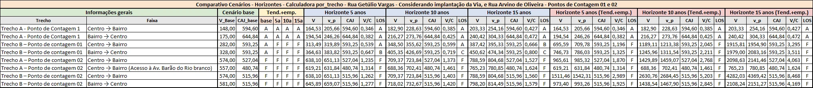
Tabela 13.1 - Horizontes 5, 10 e 15 anos – LOS
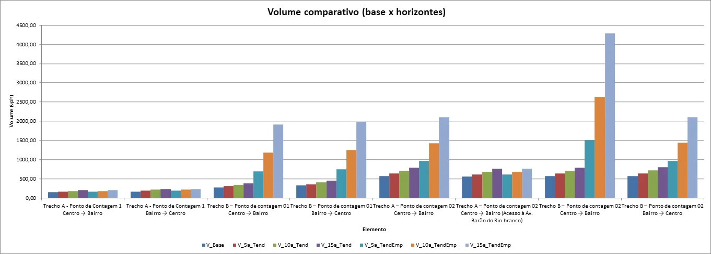
Gráfico 13.1 - Horizontes 5, 10 e 15 anos – volume comparativo
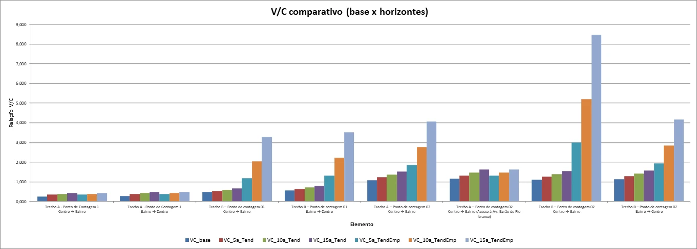
Gráfico 13.2 - V/C Comparativo nos Horizontes Interseções
A leitura dos resultados indica desempenho favorável no Trecho A - Ponto de Contagem 01, em ambos os sentidos, com manutenção do nível de serviço A nos três horizontes avaliados. No sentido Centro → Bairro, a relação V/C evolui de 0,346 em 5 anos para 0,385 em 10 anos e 0,427 em 15 anos. No sentido Bairro → Centro, os valores também permanecem controlados, passando de 0,382 para 0,425 e 0,472, respectivamente. Esses resultados demonstram boa folga operacional no trecho e melhor acomodação dos fluxos redistribuídos.
A maior sensibilidade no Ponto de Contagem 01 ocorre no Trecho B, onde os dois sentidos apresentam nível de serviço F nos horizontes projetados. O sentido Centro → Bairro apresenta V/C de 1,196, 2,045 e 3,295, enquanto o sentido Bairro → Centro apresenta V/C de 1,325, 2,211 e 3,511, nos horizontes de 5, 10 e 15 anos.
Nos trechos associados ao Ponto de Contagem 02, observa-se condição crítica em todos os horizontes, com predominância de nível de serviço F. Essa leitura deve considerar que o Ponto 02 já se insere em área de maior centralidade urbana, funcionando como ponto de convergência e redistribuição dos fluxos locais em direção à Avenida Barão do Rio Branco. Assim, o maior carregamento decorre especialmente da dinâmica urbana consolidada, da concentração de movimentos de acesso e da função de passagem e distribuição da área central.
Assim, no sistema viário alterado, a Rua Getúlio Vargas apresenta desempenho heterogêneo: o Trecho A do Ponto de Contagem 01 demonstra resposta operacional favorável e boa capacidade de acomodação da demanda, enquanto o Trecho B do Ponto de Contagem 01 e os trechos do Ponto de Contagem 02 permanecem como pontos de atenção, exigindo acompanhamento e eventuais medidas complementares de ordenamento nos horizontes futuros.
13.1.2 Rua Dr. José Firmo Bernardi - Sistema Viário Alterado¶
Para a Rua Dr. José Firmo Bernardi, as tabelas e gráficos apresentados a seguir demonstram a evolução dos volumes, da relação V/C e dos níveis de serviço no sistema viário alterado, nos horizontes de 5, 10 e 15 anos. Os resultados permitem verificar os efeitos da nova configuração da malha sobre o eixo, especialmente quanto à redistribuição dos carregamentos, à melhora operacional dos trechos diretamente beneficiados pelas intervenções e à permanência de pontos sensíveis nos segmentos de maior demanda acumulada.
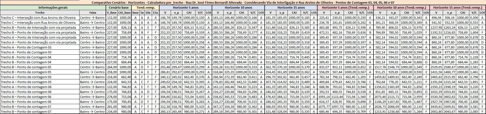
Tabela 13.2 - Horizontes 5, 10 e 15 anos – LOS
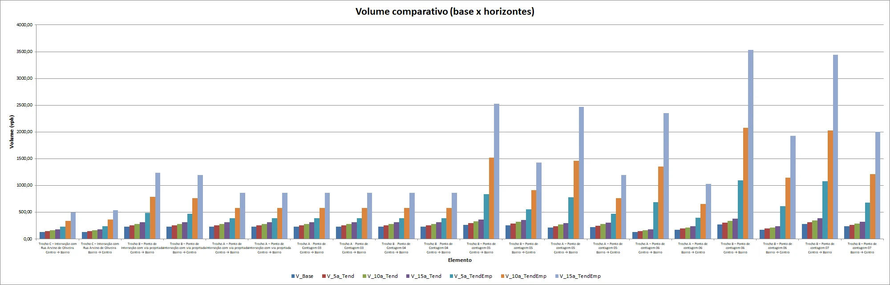
Gráfico 13.3 - Horizontes 5, 10 e 15 anos – volume comparativo
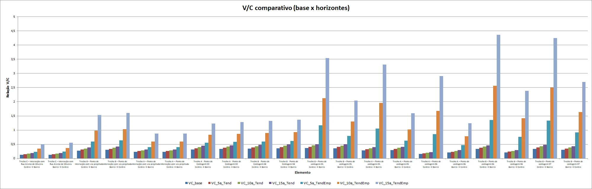
Gráfico 13.4 - V/C Comparativo nos Horizontes Interseções
Em síntese, os cálculos, tabelas e gráficos indicam como principal ponto positivo a melhora do desempenho nos trechos inseridos na área de influência direta da via de interligação e da Rua Arvino de Oliveira. Destaca-se a interseção com a Rua Arvino de Oliveira, que mantém nível de serviço A em ambos os sentidos nos horizontes de 5, 10 e 15 anos, demonstrando boa acomodação dos fluxos redistribuídos. Também se observa desempenho favorável nos trechos associados ao Ponto de Contagem 03 e ao Trecho A da via projetada, que permanecem em condição operacional satisfatória nos primeiros horizontes, com degradação mais perceptível apenas no horizonte de 15 anos.
Como ponto de atenção, os resultados ainda indicam maior carregamento nos trechos associados aos Pontos de Contagem 05, 06 e 07, onde a demanda acumulada sobre a Rua Dr. José Firmo Bernardi permanece elevada. Ainda assim, a leitura geral evidencia que o sistema alterado proporciona melhor organização dos fluxos nos trechos diretamente influenciados pelas intervenções, reduzindo a dependência operacional da via como eixo único de ligação do setor oeste com a área central.
13.1.3 Rua Sete de Setembro - Sistema Viário Alterado¶
Para a Rua Dr. José Firmo Bernardi, as tabelas e gráficos apresentados a seguir demonstram a evolução dos volumes, da relação V/C e dos níveis de serviço no sistema viário alterado, considerando o cenário Tendencial + Empreendimento nos horizontes de 5, 10 e 15 anos. A leitura permite verificar os efeitos da nova configuração da malha sobre esse eixo coletor, especialmente quanto à redistribuição dos carregamentos, ao desempenho dos trechos diretamente beneficiados pela via de interligação e pela Rua Arvino de Oliveira, e à permanência de pontos sensíveis nos segmentos de maior demanda acumulada.
Os gráficos de volume comparativo e V/C comparativo permitem observar a progressão dos carregamentos ao longo dos horizontes e identificar em quais trechos a nova configuração viária proporciona melhor acomodação dos fluxos, bem como os pontos que ainda exigem atenção operacional nos horizontes futuros.
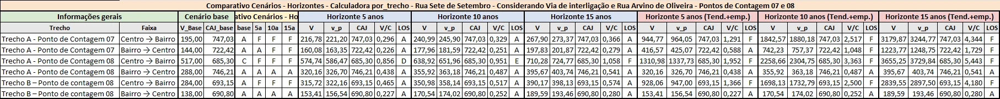
Tabela 13.3 - Horizontes 5, 10 e 15 anos – LOS
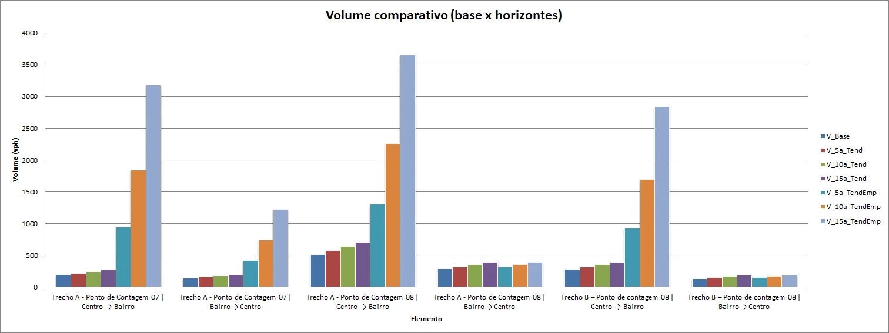
Gráfico 13.5 - Horizontes 5, 10 e 15 anos – volume comparativo
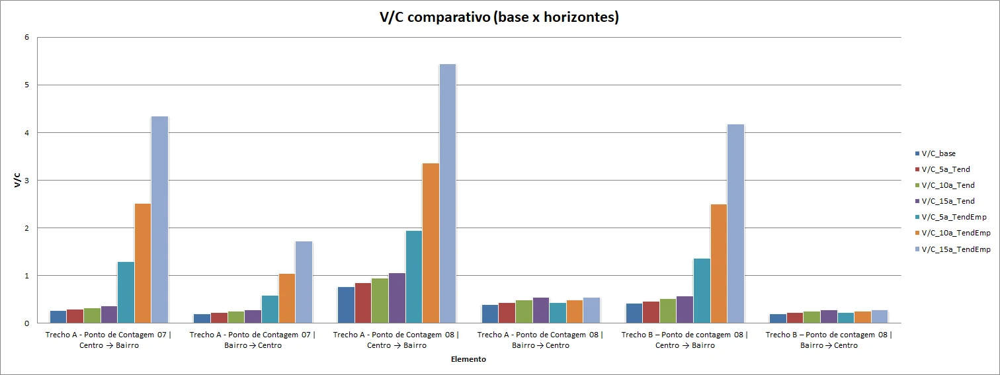
Gráfico 13.6 - V/C Comparativo nos Horizontes Interseções
Em síntese, os cálculos, tabelas e gráficos indicam como principal ponto positivo o desempenho dos trechos inseridos na área de influência direta das intervenções. Destaca-se a interseção com a Rua Arvino de Oliveira, que mantém nível de serviço A em ambos os sentidos nos horizontes de 5, 10 e 15 anos, com V/C máximo de 0,506 no sentido Centro → Bairro e 0,553 no sentido Bairro → Centro no horizonte de 15 anos. Esse resultado demonstra boa capacidade de acomodação dos fluxos redistribuídos nesse novo arranjo viário.
Também se observa desempenho favorável nos trechos associados à via projetada de interligação. O Trecho A - Ponto de Interseção com via projetada permanece em nível de serviço A nos horizontes de 5 e 10 anos, atingindo nível D apenas no horizonte de 15 anos, com V/C de 0,878. Já o Trecho B - Ponto de Interseção com via projetada apresenta bom desempenho no horizonte de 5 anos, com nível A no sentido Centro → Bairro e nível B no sentido Bairro → Centro, passando a apresentar maior sensibilidade nos horizontes de 10 e 15 anos.
Nos pontos existentes da Rua Dr. José Firmo Bernardi, os resultados indicam comportamento variável. Os trechos associados aos Pontos de Contagem 03 e 04 apresentam boa resposta nos primeiros horizontes, com nível A em 5 anos, e perda gradual de desempenho nos horizontes seguintes, chegando a nível F em 15 anos nos trechos mais carregados. Essa evolução demonstra que a redistribuição melhora a organização inicial dos fluxos, mas que o crescimento projetado ainda pressiona determinados segmentos no horizonte final.
Como pontos de atenção, destacam-se os trechos associados aos Pontos de Contagem 05, 06 e 07, onde a demanda acumulada permanece elevada no cenário alterado. Nesses locais, há ocorrência de nível de serviço F em parte dos trechos já nos primeiros horizontes, especialmente nos sentidos de maior carregamento. No caso do Ponto 07, essa leitura deve ser considerada em conjunto com a intervenção prevista em rotatória, destinada justamente a ordenar os movimentos, reduzir conflitos diretos e melhorar a fluidez na confluência entre a Rua Sete de Setembro, a Rua Guilherme Lugisland e a Rua Dr. José Firmo Bernardi.
Assim, a leitura geral evidencia que o sistema viário alterado proporciona melhor organização dos fluxos nos trechos diretamente influenciados pelas intervenções, especialmente junto à Rua Arvino de Oliveira e à via de interligação. Ao mesmo tempo, os resultados indicam que os trechos de maior carregamento acumulado ainda demandam acompanhamento e eventuais medidas complementares de qualificação operacional, sem afastar o ganho estrutural proporcionado pela nova configuração da malha
13.1.4 Rua Guilherme Lugisland - Sistema Viário Alterado¶
Para a Rua Guilherme Lugisland, as tabelas e gráficos apresentados a seguir demonstram a evolução dos volumes, da relação V/C e dos níveis de serviço no sistema viário alterado, considerando os horizontes de 5, 10 e 15 anos. Os resultados permitem verificar a resposta operacional da via diante da nova distribuição dos fluxos, especialmente nos trechos associados aos pontos de contagem 01, 09, 10 e 07.
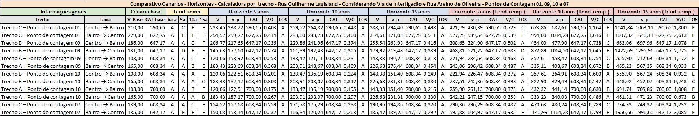
Tabela 13.4 - Horizontes 5, 10 e 15 anos – LOS
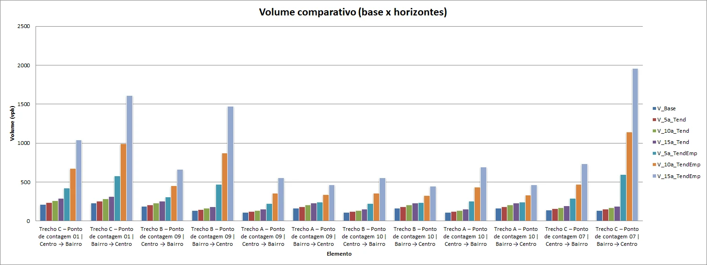
Gráfico 13.7 - Horizontes 5, 10 e 15 anos – volume comparativo
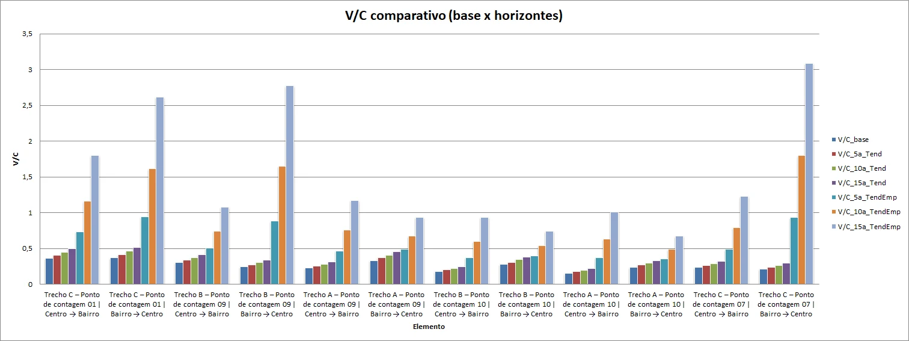
Gráfico 13.8 - V/C Comparativo nos Horizontes Interseções
Em síntese, os cálculos, tabelas e gráficos indicam que a Rua Guilherme Lugisland apresenta melhora operacional relevante em diversos trechos nos primeiros horizontes. Destacam-se os trechos associados ao Ponto de Contagem 10, que permanecem majoritariamente em nível de serviço A até 10 anos, com degradação mais perceptível apenas no horizonte de 15 anos. Também se observa boa resposta no sentido Centro → Bairro dos pontos 09 e 07, que se mantêm em nível A no horizonte de 5 anos e só apresentam piora mais significativa nos horizontes seguintes.
Como ponto de atenção, a maior criticidade permanece nos trechos de maior carregamento associados ao Ponto de Contagem 01 e no sentido Bairro → Centro do Ponto de Contagem 07, que atingem níveis desfavoráveis nos horizontes de 10 e 15 anos. Ainda assim, a leitura geral evidencia que, no sistema viário alterado, a Rua Guilherme Lugisland apresenta trechos com melhor acomodação dos fluxos redistribuídos, preservando desempenho satisfatório em parte relevante da via nos primeiros horizontes e concentrando a criticidade nos trechos de maior demanda acumulada.
13.1.5 Rua Albino Holsbach - Sistema Viário Alterado¶
Para a Rua Albino Holsbach, as tabelas e gráficos apresentados a seguir demonstram a evolução dos volumes, da relação V/C e dos níveis de serviço no sistema viário alterado, considerando os horizontes de 5, 10 e 15 anos. Os resultados permitem avaliar o desempenho da via como ligação curta de redistribuição entre a Rua Dr. José Firmo Bernardi e a Rua Guilherme Lugisland, bem como identificar os sentidos que permanecem com melhor acomodação dos fluxos e aqueles que concentram maior carregamento.
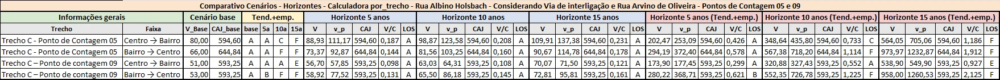
Tabela 13.5 - Horizontes 5, 10 e 15 anos – LOS
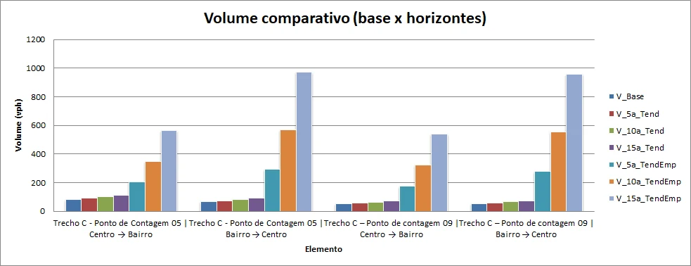
Gráfico 13.9 - Horizontes 5, 10 e 15 anos – volume comparativo
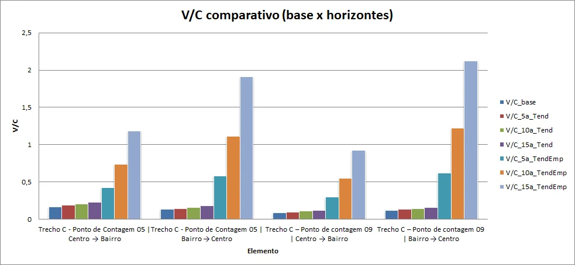
Gráfico 13.10 - V/C Comparativo nos Horizontes Interseções
Em síntese, os cálculos, tabelas e gráficos indicam que a Rua Albino Holsbach apresenta desempenho satisfatório no horizonte de 5 anos, com todos os trechos avaliados operando entre os níveis de serviço A e B no cenário Tendencial + Empreendimento. Também se destaca positivamente o sentido Centro → Bairro no Ponto de Contagem 09, que mantém nível A até 10 anos e alcança nível E apenas no horizonte de 15 anos, indicando melhor resposta operacional relativa.
Como ponto de atenção, a criticidade passa a se concentrar nos sentidos Bairro → Centro, especialmente nos pontos de contagem 05 e 09. Nesses trechos, os resultados evoluem para nível F a partir do horizonte de 10 anos, com agravamento no horizonte de 15 anos. Assim, no sistema viário alterado, a Rua Albino Holsbach mantém bom desempenho inicial, mas apresenta sensibilidade futura nos fluxos de retorno, exigindo atenção nos horizontes mais avançados.
13.2 INTERSEÇÕES¶
Nas interseções do sistema viário alterado, a avaliação considera os efeitos da nova configuração da malha sobre os nós analisados, incluindo a implantação da via de interligação, a requalificação da Rua Arvino de Oliveira e a redistribuição dos fluxos nos horizontes de 5, 10 e 15 anos.
As tabelas e gráficos apresentados neste item demonstram a evolução dos volumes, da relação V/C, dos atrasos e dos níveis de serviço por aproximação, faixa e movimento. A leitura permite identificar os nós que passam a operar com melhor organização dos fluxos, os pontos em que há redução de conflitos ou alívio operacional e as interseções que ainda permanecem sensíveis em razão do maior carregamento ou da proximidade com áreas de convergência urbana.
13.2.1 Ponto 01 - Rua Getúlio Vargas x Rua Guilherme Lugisland¶
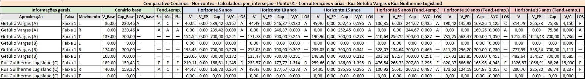
Para o Ponto 01, as tabelas e gráficos apresentados a seguir demonstram o comportamento da interseção entre a Rua Getúlio Vargas e a Rua Guilherme Lugisland no sistema viário alterado, considerando os horizontes de 5, 10 e 15 anos. A leitura contempla os resultados por aproximação, faixa crítica, movimentos, matriz de conflitos, lacunas de aceitação e os gráficos comparativos de volume e relação V/C, permitindo avaliar como a nova configuração viária reorganiza os fluxos no nó e modifica sua condição operacional.Tabela 13.6 - Resultado por aproximação Horizontes 5, 10 e 15 anos – LOS
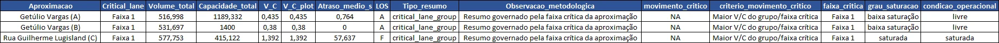
Tabela 13.7 - Resultados por aproximação (faixa crítica)
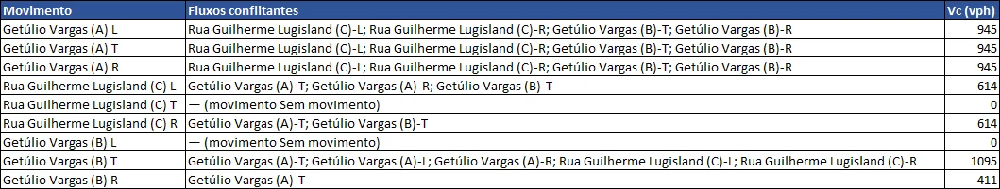
Tabela 13.8 - Matriz de conflitos
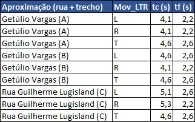
Tabela 13.9 - Lacunas (tc, tf)
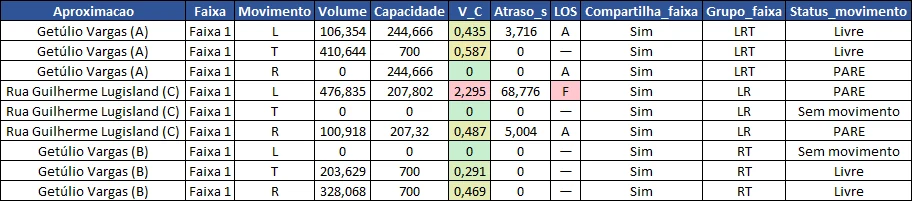
Tabela 13.10 - Resultado por movimento
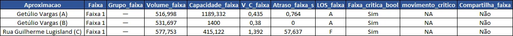
Tabela 13.11 - Resultados por faixa (lane group)
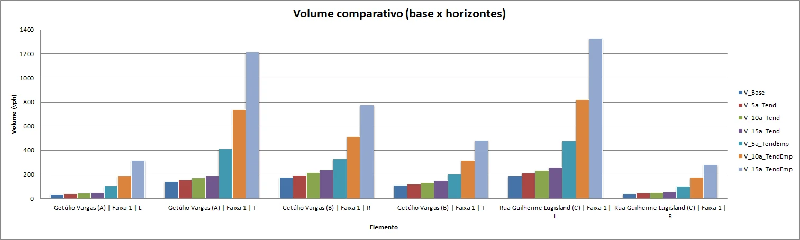
Gráfico 13.11 - Volume comparativo
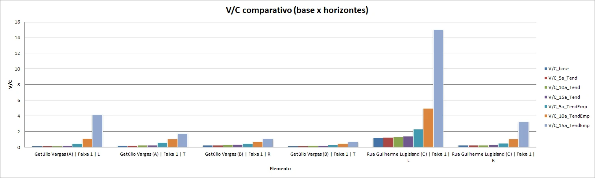
Gráfico 13.12 - V/C Comparativo
Em síntese, os resultados indicam resposta positiva da interseção no sistema viário alterado, especialmente nas aproximações da Rua Getúlio Vargas. A aproximação Getúlio Vargas (A) apresenta V/C de 0,435, atraso médio de 0,764 s/veic e nível de serviço A, enquanto a aproximação Getúlio Vargas (B) registra V/C de 0,380, atraso nulo e nível de serviço A. Esses indicadores demonstram boa fluidez nas aproximações principais e maior equilíbrio operacional do nó.
A aproximação da Rua Guilherme Lugisland permanece como a mais sensível, sobretudo no movimento à esquerda, que depende da aceitação de lacunas nos fluxos da Rua Getúlio Vargas. Ainda assim, observa-se melhor organização dos carregamentos, com o movimento à direita operando em nível de serviço A e V/C de 0,487, indicando que a separação ou melhor disciplina dos movimentos de conversão pode ampliar o ganho operacional da interseção.
Os gráficos “Volume comparativo” e “V/C comparativo” reforçam que o sistema alterado proporciona melhor acomodação dos fluxos nos horizontes iniciais, com ganhos mais perceptíveis nas aproximações da Rua Getúlio Vargas e na distribuição geral dos movimentos. Eventuais pontos de atenção permanecem associados à aproximação da Rua Guilherme Lugisland e podem ser tratados por intervenções complementares de organização geométrica, como alargamento localizado, melhoria das faixas de aproximação e separação mais clara dos movimentos à direita e à esquerda.
Assim, o Ponto 01 apresenta ganho operacional efetivo com as alterações viárias, mantendo as aproximações principais em condição favorável e indicando que melhorias complementares de geometria e canalização podem potencializar a fluidez e reduzir conflitos residuais na aproximação secundária.
13.2.2 Ponto 02 - Rua Getúlio Vargas x Avenida Barão do Rio Branco¶
Para o Ponto 02, as tabelas e gráficos apresentados a seguir demonstram o comportamento da interseção entre a Rua Getúlio Vargas e a Avenida Barão do Rio Branco no sistema viário alterado, considerando os horizontes de 5, 10 e 15 anos. A leitura contempla os resultados por aproximação, faixa crítica, movimentos, matriz de conflitos, lacunas de aceitação e os gráficos comparativos de volume e relação V/C.
Ressalta-se que esta interseção se localiza fora da área de influência direta das intervenções propostas, já em área de maior centralidade urbana. Trata-se de um nó de convergência e redistribuição de fluxos de ruas adjacentes para a Avenida Barão do Rio Branco, de modo que os fluxos dos loteamentos analisados não influenciam diretamente sua operação na mesma proporção observada nos pontos inseridos no setor de intervenção.
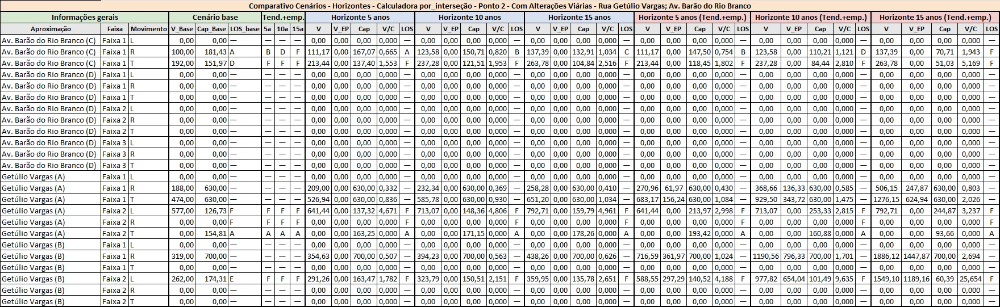
Tabela 13.12 - Resultado por aproximação Horizontes 5, 10 e 15 anos – LOS
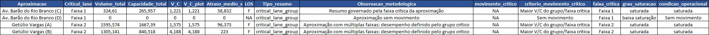
Tabela 13.13 - Resultados por aproximação (faixa crítica)
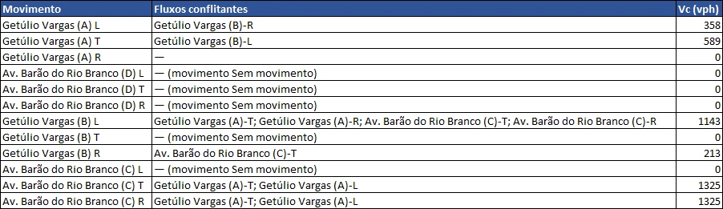
Tabela 13.14 - Matriz de conflitos
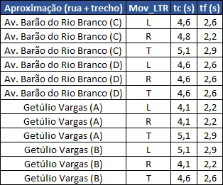
Tabela 13.15 - Lacunas (tc, tf)
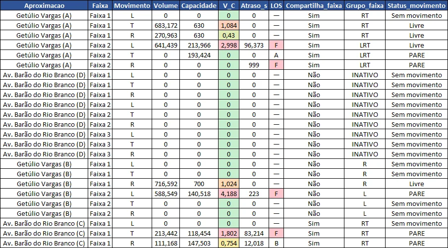
Tabela 13.16 - Resultado por movimento / Faixa/ Faixa
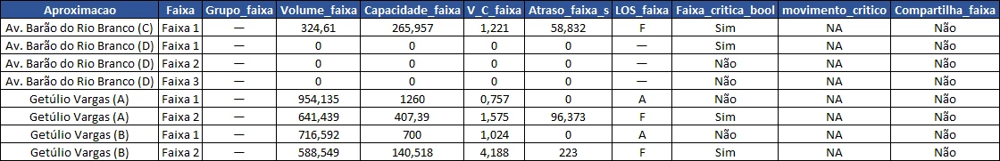
Tabela 13.17 - Resultados por faixa (lane group)
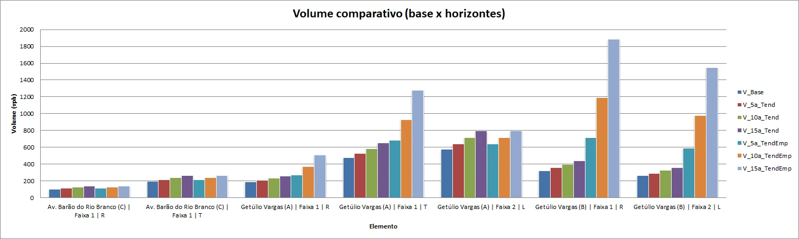
Gráfico 13.13 - Volume comparativo
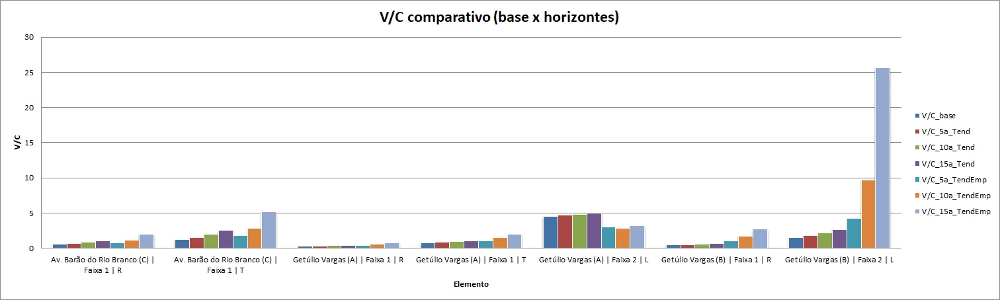
Gráfico 13.14 - V/C Comparativo
Em síntese, os cálculos, tabelas e gráficos indicam que o Ponto 02 permanece condicionado principalmente pelo carregamento urbano já consolidado da área central. O gráfico “Volume comparativo” evidencia o aumento dos volumes ao longo dos horizontes, enquanto o gráfico “V/C comparativo” demonstra que a maior pressão operacional ocorre nas faixas críticas da Rua Getúlio Vargas, especialmente nos movimentos de conversão e redistribuição para a Avenida Barão do Rio Branco.
Ainda assim, a leitura dos resultados deve considerar que esta interseção não recebe alteração física ou operacional direta no cenário proposto. Dessa forma, eventuais pontos de atenção observados nos horizontes futuros decorrem predominantemente da própria condição de centralidade, da convergência de fluxos locais e da distribuição interna da malha urbana. O sistema viário alterado apresenta ganhos mais expressivos nos nós diretamente influenciados pelas intervenções, enquanto o Ponto 02 funciona como ponto de controle da continuidade dos fluxos em direção à área central.
13.2.3 Ponto sem contagem - Rua Dr. José Firmo Bernardi x Via projetada¶
Para o Ponto 03-1, as tabelas e gráficos apresentados a seguir demonstram o comportamento operacional da nova interseção formada entre a Rua Dr. José Firmo Bernardi e a via projetada de interligação com a Rua Getúlio Vargas. Trata-se de ponto criado pela abertura pretendida, razão pela qual sua avaliação ocorre exclusivamente no cenário com alterações viárias, considerando os horizontes de 5, 10 e 15 anos.
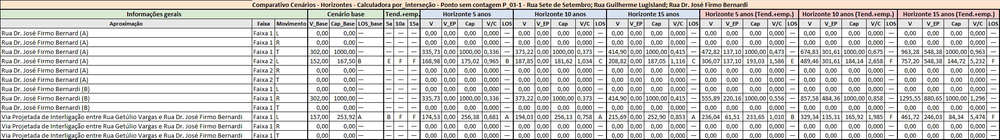
Tabela 13.18 - Resultado por aproximação Horizontes 5, 10 e 15 anos – LOS
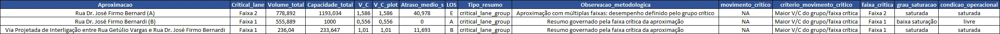
Tabela 13.19 - Resultados por aproximação (faixa crítica)
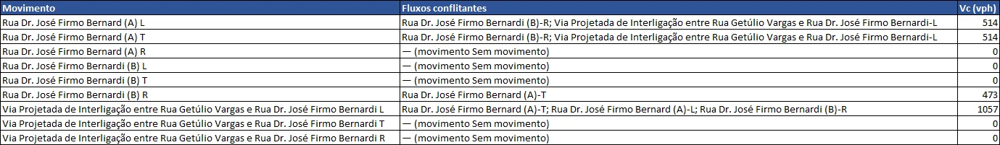
Tabela 13.20 - Matriz de conflitos
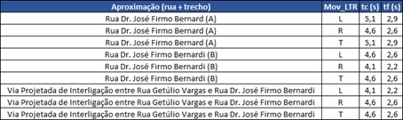
Tabela 13.21 - Lacunas (tc, tf)
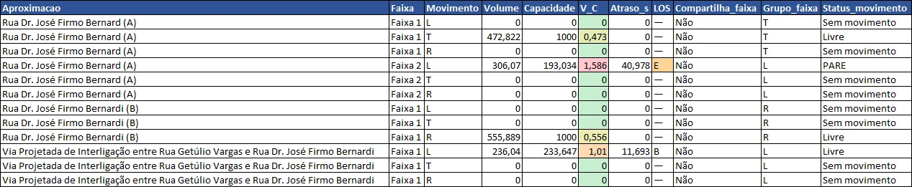
Tabela 13.22 - Resultado por movimento
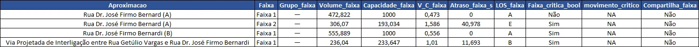
Tabela 13.23 - Resultados por faixa (lane group)
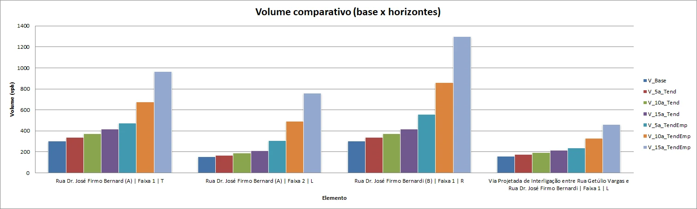
Gráfico 13.15 - Volume comparativo
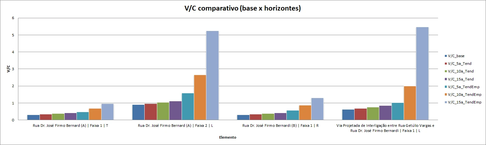
Gráfico 13.16 - V/C Comparativo
Em síntese, os resultados indicam que a criação da interseção estabelece uma nova alternativa de redistribuição dos fluxos no setor oeste, permitindo conexão direta entre a Rua Dr. José Firmo Bernardi e a Rua Getúlio Vargas. A leitura por aproximação mostra desempenho favorável na Rua Dr. José Firmo Bernardi (B), com V/C de 0,556 e nível de serviço A, enquanto a via projetada apresenta V/C de 1,010, atraso médio de 11,693 s/veic e nível de serviço B, indicando boa capacidade de inserção na configuração inicial.
A aproximação da Rua Dr. José Firmo Bernardi (A) concentra maior atenção, com V/C de 1,586, atraso médio de 40,978 s/veic e nível de serviço E, especialmente em razão do movimento à esquerda, que passa a absorver parte relevante da redistribuição promovida pela nova ligação. Ainda assim, esse resultado deve ser interpretado como ponto de ajuste operacional próprio de uma nova interseção, passível de aprimoramento por medidas complementares de geometria, canalização, separação de movimentos ou adequação das faixas de aproximação.
Os gráficos de volume comparativo e V/C comparativo demonstram que a nova conexão cumpre papel relevante na reorganização da circulação, criando alternativa de percurso e reduzindo a dependência dos eixos atualmente mais carregados. Assim, o Ponto 03-1 representa elemento estruturante do sistema viário alterado, com ganho funcional evidente para a redistribuição dos fluxos e com eventuais ajustes operacionais a serem considerados nos horizontes futuros.
13.2.4 Ponto 05 - Rua Dr. José Firmo Bernardi x Rua Albino Holsbach¶
Para o Ponto 05, as tabelas e gráficos apresentados a seguir demonstram o comportamento da interseção entre a Rua Dr. José Firmo Bernardi e a Rua Albino Holsbach no sistema viário alterado, considerando os horizontes de 5, 10 e 15 anos. A leitura contempla os resultados por aproximação, faixa crítica, movimentos, matriz de conflitos, lacunas de aceitação e gráficos comparativos de volume e relação V/C, permitindo avaliar os efeitos da nova organização viária sobre este nó de conexão interna.
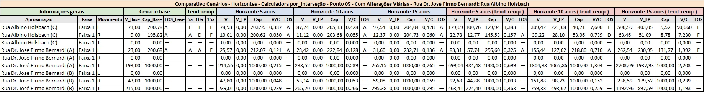
Tabela 13.24 - Resultado por aproximação Horizontes 5, 10 e 15 anos – LOS
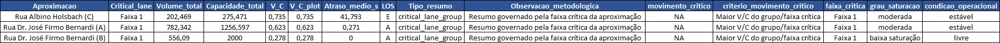
Tabela 13.25 - Resultados por aproximação (faixa crítica)
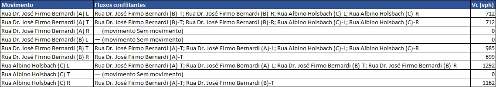
Tabela 13.26 - Matriz de conflitos
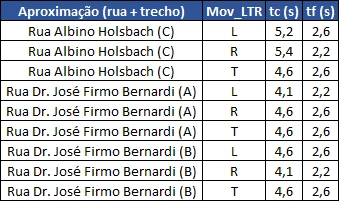
Tabela 13.27 - Lacunas (tc, tf)
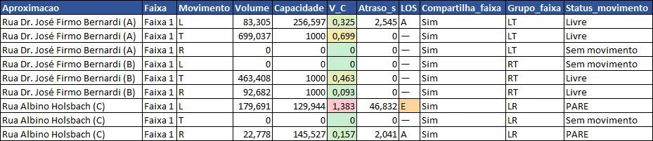
Tabela 13.28 - Resultado por movimento / Faixa
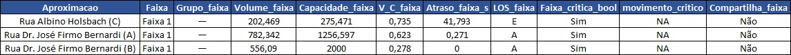
Tabela 13.29 - Resultados por faixa (lane group)
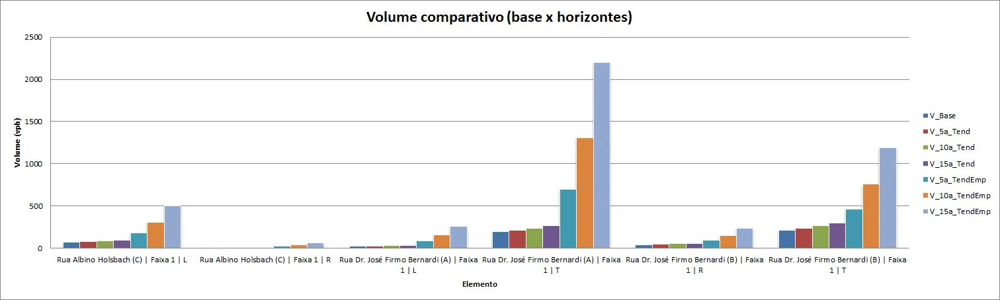
Gráfico 13.17 - Volume comparativo
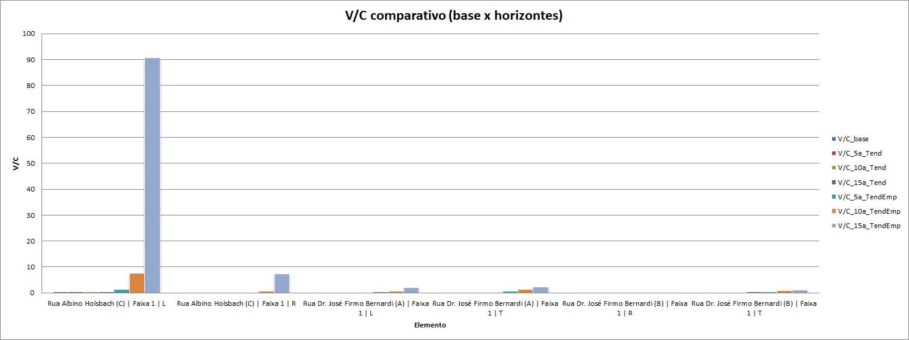
Gráfico 13.18 - V/C Comparativo
Em síntese, os resultados indicam ganho operacional relevante no sistema viário alterado, especialmente na leitura consolidada das aproximações da Rua Dr. José Firmo Bernardi, que permanecem em condição favorável no horizonte inicial. A aproximação Dr. José Firmo Bernardi (A) apresenta V/C de 0,623, atraso médio de 0,271 s/veic e nível de serviço A, enquanto a aproximação Dr. José Firmo Bernardi (B) registra V/C de 0,278, atraso nulo e nível de serviço A, evidenciando boa fluidez no eixo principal.
A aproximação da Rua Albino Holsbach permanece como o ponto de maior atenção do nó, porém com condição mais equilibrada na leitura por aproximação, registrando V/C de 0,735, atraso médio de 41,793 s/veic e nível de serviço E. A análise por movimento mostra que o giro à esquerda concentra a maior restrição, por depender da aceitação de lacunas nos fluxos da Rua Dr. José Firmo Bernardi, enquanto o giro à direita apresenta desempenho favorável, com V/C de 0,157 e nível de serviço A.
Os gráficos de volume comparativo e V/C comparativo demonstram que a nova configuração contribui para melhor organização dos carregamentos no horizonte de 5 anos, com manutenção de boas condições no eixo principal e redução da pressão imediata sobre a interseção. Eventuais pontos de atenção nos horizontes de 10 e 15 anos devem ser compreendidos como subsídio para intervenções complementares futuras, como ajustes geométricos, qualificação das aproximações e melhor separação dos movimentos de conversão.
Assim, o Ponto 05 apresenta resposta positiva às alterações viárias, com boa fluidez na Rua Dr. José Firmo Bernardi e melhora na organização operacional da interseção. A Rua Albino Holsbach permanece como aproximação sensível, mas os resultados indicam que a condição pode ser tratada por medidas complementares de ordenamento, sem comprometer a leitura geral de ganho operacional do sistema alterado.
13.2.5 Ponto 06 - Rua Dr. José Firmo Bernardi x Rua Celso Braz de Carli¶
Para o Ponto 06, as tabelas e gráficos apresentados a seguir demonstram o comportamento da interseção entre a Rua Dr. José Firmo Bernardi e a Rua Celso Braz de Carli no sistema viário alterado, considerando os horizontes de 5, 10 e 15 anos. A leitura contempla os resultados por aproximação, faixa crítica, movimentos, matriz de conflitos, lacunas de aceitação e os gráficos comparativos de volume e relação V/C, permitindo avaliar os efeitos da nova redistribuição de fluxos sobre este nó de conexão local.
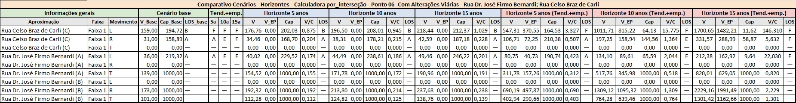
Tabela 13.30 - Resultado por aproximação Horizontes 5, 10 e 15 anos – LOS
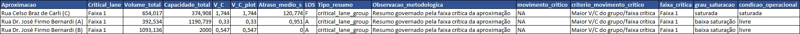
Tabela 13.31 - Resultados por aproximação (faixa crítica)
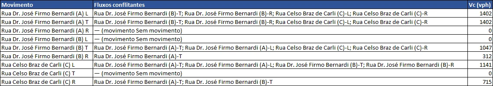
Tabela 13.32 - Matriz de conflitos
Tabela 13.33 - Lacunas (tc, tf)
Tabela 13.34 - Resultado por movimento / Faixa
Tabela 13.35 - Resultados por faixa (lane group)
Gráfico 13.19 - Volume comparativo
Gráfico 13.20 - V/C Comparativo
Em síntese, os resultados indicam resposta positiva do eixo principal da Rua Dr. José Firmo Bernardi, que mantém boa fluidez nas duas aproximações avaliadas na leitura por faixa crítica. A aproximação Dr. José Firmo Bernardi (A) registra V/C de 0,330, atraso médio de 0,951 s/veic e nível de serviço A, enquanto a aproximação Dr. José Firmo Bernardi (B) apresenta V/C de 0,547, atraso nulo e nível de serviço A. Esses indicadores evidenciam boa acomodação dos fluxos redistribuídos no eixo principal.
A Rua Celso Braz de Carli permanece como aproximação mais sensível, com V/C de 1,744, atraso médio de 120,774 s/veic e nível de serviço F na leitura por aproximação. A análise por movimento demonstra, contudo, que a restrição se concentra no giro à esquerda, com V/C de 3,327 e atraso de 143,312 s/veic, enquanto o movimento à direita opera de forma favorável, com V/C de 0,507, atraso de 5,177 s/veic e nível de serviço A.
Os gráficos de volume comparativo e V/C comparativo indicam que a nova configuração viária contribui para organizar o fluxo principal da Rua Dr. José Firmo Bernardi, preservando níveis adequados de operação nas aproximações de maior continuidade. Os pontos de atenção observados na Rua Celso Braz de Carli devem ser tratados como subsídio para melhorias complementares de horizonte futuro, como ajustes geométricos, separação dos movimentos de conversão, ampliação ou qualificação da aproximação e melhor canalização das manobras.
Assim, o Ponto 06 apresenta ganho operacional relevante no eixo principal e confirma a efetividade da redistribuição promovida pelas alterações viárias. As restrições remanescentes ficam localizadas na aproximação secundária e podem orientar intervenções pontuais de organização da interseção, sem comprometer a leitura positiva do sistema alterado.
13.2.6 Ponto 07 - Rua Sete de Setembro x Rua Guilherme Lugisland x Rua Dr. José Firmo Bernardi¶
Para o Ponto 07, as tabelas e gráficos apresentados a seguir demonstram o comportamento da interseção no sistema viário alterado, considerando os horizontes de 5, 10 e 15 anos. A leitura contempla os resultados por aproximação, faixa crítica, movimentos, matriz de conflitos, lacunas de aceitação e os gráficos comparativos de volume e relação V/C, permitindo avaliar a reorganização dos fluxos em um dos nós mais relevantes da malha analisada.
Tabela 13.36 - Resultado por aproximação Horizontes 5, 10 e 15 anos – LOS
Tabela 13.37 - Resultados por aproximação (faixa crítica)
Tabela 13.38 - Matriz de conflitos
Tabela 13.39 - Lacunas (tc, tf)
Tabela 13.40 - Resultado por movimento / Faixa
Tabela 13.41 - Resultados por faixa (lane group)
Gráfico 13.21 - Volume comparativo
Gráfico 13.22 - V/C Comparativo
Em síntese, as tabelas e gráficos do Ponto 07 indicam resposta positiva da nova configuração viária, com melhor organização dos fluxos no nó formado pela Rua Sete de Setembro, Rua Guilherme Lugisland e Rua Dr. José Firmo Bernardi. Na leitura consolidada por aproximação, a Rua Guilherme Lugisland apresenta V/C de 0,237, atraso médio de 8,367 s/veic e nível de serviço A, enquanto a Rua Sete de Setembro registra V/C de 0,856, atraso médio de 0,756 s/veic e nível de serviço A, demonstrando boa fluidez em aproximações relevantes da interseção.
A Rua Dr. José Firmo Bernardi permanece como aproximação de maior atenção na leitura consolidada, com V/C de 0,675, atraso médio de 106,242 s/veic e nível de serviço F, condição associada principalmente ao movimento à esquerda, que apresenta V/C de 3,209 e atraso de 208,912 s/veic. Essa leitura deve ser interpretada em conjunto com a intervenção já prevista para o local, uma vez que está programada a implantação de rotatória no Ponto 07, justamente com a finalidade de reorganizar os movimentos, reduzir conflitos diretos e melhorar a fluidez do nó.
Assim, os pontos de atenção identificados nesta interseção funcionam como subsídio para a avaliação da solução em rotatória, tratada em item específico deste capítulo. Conforme poderá ser observado na análise própria da rotatória do Ponto 07, a reconfiguração tende a qualificar a operação da interseção, proporcionando melhor ordenamento das aproximações e maior eficiência na distribuição dos fluxos.
13.2.7 Ponto 08 - Rua Sete de Setembro x Rua Salgado Filho¶
Para o Ponto 08, as tabelas e gráficos apresentados a seguir demonstram o comportamento da interseção entre a Rua Sete de Setembro e a Rua Salgado Filho no sistema viário alterado, considerando os horizontes de 5, 10 e 15 anos. A leitura contempla os resultados por aproximação, faixa crítica, movimentos, matriz de conflitos, lacunas de aceitação e os gráficos comparativos de volume e relação V/C.
Ressalta-se que esta interseção está localizada fora da área de influência direta das intervenções viárias propostas, em setor de maior centralidade urbana. Trata-se de nó de convergência e redistribuição de fluxos locais, recebendo movimentos provenientes de ruas adjacentes e direcionando parte significativa da circulação para a Rua Sete de Setembro e para a malha central. Por essa razão, a operação do Ponto 08 é condicionada sobretudo pelo fluxo urbano já consolidado, e não diretamente pelos fluxos redistribuídos a partir dos loteamentos analisados.
Tabela 13.42 - Resultado por aproximação Horizontes 5, 10 e 15 anos – LOS
Tabela 13.43 - Resultados por aproximação (faixa crítica)
Tabela 13.44 - Matriz de conflitos
Tabela 13.45 - Lacunas (tc, tf)
Tabela 13.46 - Resultado por movimento / Faixa
Tabela 13.47 - Resultados por faixa (lane group)
Gráfico 13.23 - Volume comparativo
Gráfico 13.24 - V/C Comparativo
Em síntese, os cálculos, tabelas e gráficos indicam que a Rua Sete de Setembro mantém boa fluidez em parte relevante da interseção, especialmente na aproximação Sete de Setembro (B), que registra V/C de 0,068, atraso médio de 0,933 s/veic e nível de serviço A na leitura consolidada. A aproximação Salgado Filho (D) também apresenta condição operacional controlada, com V/C de 0,575, atraso médio de 14,775 s/veic e nível de serviço B.
Os pontos de maior atenção concentram-se na aproximação Salgado Filho (C), com V/C de 1,072, atraso médio de 93,677 s/veic e nível de serviço F, e no movimento à esquerda da Sete de Setembro (A), que registra V/C de 4,678 e atraso de 185,232 s/veic. Esses resultados devem ser interpretados como reflexo da própria condição urbana do nó, inserido em área central de convergência, servindo como base para eventuais melhorias complementares de organização, canalização e separação de movimentos.
Assim, embora o Ponto 08 apresente pontos específicos de atenção, sua leitura no sistema viário alterado deve considerar que a interseção não recebe intervenção direta e opera como nó central de redistribuição local. Os ganhos das alterações viárias são mais perceptíveis nos pontos diretamente vinculados à nova configuração da malha, enquanto o Ponto 08 cumpre papel de controle da continuidade dos fluxos em direção à área central.
13.2.8 Ponto 09 - Rua Guilherme Lugisland x Rua Albino Holsbach¶
Para o Ponto 09, as tabelas e gráficos apresentados a seguir demonstram o comportamento da interseção entre a Rua Guilherme Lugisland e a Rua Albino Holsbach no sistema viário alterado, considerando os horizontes de 5, 10 e 15 anos. A leitura contempla os resultados por aproximação, faixa crítica, movimentos, matriz de conflitos, lacunas de aceitação e os gráficos comparativos de volume e relação V/C, permitindo avaliar os efeitos da redistribuição de fluxos sobre este nó de conexão interna.
Tabela 13.48 - Resultado por aproximação Horizontes 5, 10 e 15 anos – LOS
Tabela 13.49 - Resultados por aproximação (faixa crítica)
Tabela 13.50 - Matriz de conflitos
Tabela 13.51 - Lacunas (tc, tf)
Tabela 13.52 - Resultado por movimento / Faixa
Tabela 13.53 - Resultados por faixa (lane group)
Gráfico 13.25 - Volume comparativo
Gráfico 13.26 - V/C Comparativo
Em síntese, os resultados indicam desempenho operacional favorável no sistema viário alterado. Na leitura consolidada por aproximação, todas as aproximações avaliadas permanecem em nível de serviço A. A Rua Albino Holsbach registra V/C de 0,687, atraso médio de 8,973 s/veic e nível de serviço A, enquanto a Rua Guilherme Lugisland apresenta V/C de 0,159 na aproximação A e V/C de 0,441 na aproximação B, ambas também em nível de serviço A.
Os gráficos de volume comparativo e V/C comparativo indicam que a nova configuração contribui para melhor acomodação dos fluxos na interseção, preservando baixa saturação nas aproximações principais e mantendo o nó em condição operacional satisfatória nos horizontes analisados. A Rua Albino Holsbach permanece como aproximação de maior atenção relativa, por depender da aceitação de lacunas para inserção na Rua Guilherme Lugisland, mas os indicadores demonstram operação controlada e compatível com a função local da interseção.
Assim, o Ponto 09 apresenta resposta positiva no sistema viário alterado, com boa organização dos movimentos, níveis de serviço favoráveis e relação V/C em patamar operacionalmente aceitável, reforçando a contribuição da redistribuição viária para a fluidez da malha interna.
13.2.9 Ponto 10 - Rua Guilherme Lugisland x Rua Idalino Machado de Lima¶
Para o Ponto 10, as tabelas e gráficos apresentados a seguir demonstram o comportamento da interseção entre a Rua Guilherme Lugisland e a Rua Idalino Machado de Lima no sistema viário alterado, considerando os horizontes de 5, 10 e 15 anos. A leitura contempla os resultados por aproximação, faixa crítica, movimentos, matriz de conflitos, lacunas de aceitação e os gráficos comparativos de volume e relação V/C, permitindo verificar a resposta operacional deste nó de distribuição local.
Tabela 13.54 - Resultado por aproximação Horizontes 5, 10 e 15 anos – LOS
Tabela 13.55 - Resultados por aproximação (faixa crítica)
Tabela 13.56 - Matriz de conflitos
Tabela 13.57 - Lacunas (tc, tf)
Tabela 13.58 - Resultado por movimento / Faixa
Tabela 13.59 - Resultados por faixa (lane group)
Gráfico 13.27 - Volume comparativo
Gráfico 13.28 - V/C Comparativo
Em síntese, os resultados indicam desempenho favorável da interseção no sistema viário alterado. Na leitura consolidada por aproximação, todas as aproximações avaliadas permanecem em nível de serviço A, com baixos atrasos e relações V/C reduzidas. A Rua Guilherme Lugisland (A) registra V/C de 0,231 e atraso médio de 0,143 s/veic; a Rua Guilherme Lugisland (B) apresenta V/C de 0,186 e atraso nulo; e a Rua Idalino Machado de Lima (C) registra V/C de 0,259 e atraso médio de 3,176 s/veic.
A análise por faixa confirma a baixa saturação do nó, com todas as faixas críticas em nível de serviço A. A leitura por movimento também demonstra operação controlada, inclusive na saída da Rua Idalino Machado de Lima, cujo movimento à esquerda registra V/C de 0,369 e atraso de 5,072 s/veic, enquanto o movimento à direita apresenta V/C de 0,102 e atraso de 0,513 s/veic.
Os gráficos de volume comparativo e V/C comparativo reforçam que a nova configuração viária preserva boa capacidade de acomodação dos fluxos nesta interseção, mesmo com a evolução da demanda nos horizontes projetados. Assim, o Ponto 10 apresenta resposta operacional positiva no sistema viário alterado, mantendo baixa saturação, bom nível de serviço e adequada fluidez para sua função de conexão local.
13.2.10 Rotatória P07¶
Para a rotatória do Ponto 07, as tabelas e gráficos apresentados a seguir demonstram o desempenho operacional do nó reconfigurado entre a Rua Sete de Setembro, a Rua Guilherme Lugisland e a Rua Dr. José Firmo Bernardi, considerando os horizontes de 5, 10 e 15 anos. A leitura contempla parâmetros de entrada, geometria, volumes de base, capacidade calculada, resultados por aproximação, resumo operacional, evolução dos horizontes e gráficos comparativos de V/C, x_e e d_e.

Tabela 13.60 - Parâmetros de entradas

Tabela 13.61 - Geometria da rotatória
Tabela 13.62 - Volume de base
Tabela 13.63 - Horizontes Tendencial + Empreendimentos – LOS
Tabela 13.64 - Resumo operacional
Tabela 13.65 - Horizontes Tendencial + Empreendimentos - LOS
Gráfico 13.29 - Comparativo V/C por aproximação
Gráfico 13.30 - x_e indica o grau de saturação da aproximação
Gráfico 13.31 - d_e representa o atraso médio por veículo na aproximação
Em síntese, os resultados indicam que a solução em rotatória proporciona melhor organização dos fluxos e bom desempenho global nos primeiros horizontes. No cenário Tendencial + Empreendimento, o resumo operacional aponta nível de serviço A no horizonte de 5 anos, com atraso médio global de 3,65 s/veic, e nível de serviço B no horizonte de 10 anos, com atraso médio global de 19,68 s/veic, demonstrando resposta operacional positiva da intervenção.
A análise por aproximação mostra que, em 5 anos, a Rua Dr. José Firmo Bernardi apresenta x_e de 0,679 e LOS A, enquanto a Rua Guilherme Lugisland registra x_e de 0,429 e LOS A. A Rua Sete de Setembro aparece como aproximação de maior carregamento, com x_e de 1,27, mas ainda com LOS A nesse horizonte. Em 10 anos, a rotatória mantém desempenho global aceitável, com LOS B, embora a Rua Sete de Setembro passe a concentrar maior saturação, com x_e de 3,218 e LOS C.
No horizonte de 15 anos, os gráficos de V/C, x_e e d_e indicam maior pressão operacional, especialmente na Rua Sete de Setembro, com x_e de 8,185, e na Rua Guilherme Lugisland, que passa a concentrar o maior atraso, com d_e de 300 s/veic. Essa leitura deve ser entendida como subsídio para melhorias complementares futuras, como ajustes geométricos, ampliação de aproximações, canalização de movimentos e qualificação das entradas da rotatória.
Assim, a rotatória do Ponto 07 apresenta ganho operacional relevante para a organização do nó, com desempenho positivo nos horizontes de 5 e 10 anos e identificação clara dos pontos que deverão orientar eventuais aprimoramentos em horizonte mais avançado.
13.3 SÍNTESE DO SISTEMA CONSIDERANDO INTERVENÇÕES VIÁRIAS¶
A avaliação do sistema viário alterado indica que a configuração proposta apresenta desempenho operacional mais favorável que a manutenção da condição atual, sobretudo por ampliar a conectividade da malha, criar alternativas de percurso e redistribuir parte dos carregamentos entre segmentos, interseções e aproximações.
A implantação da via de interligação entre a Rua Dr. José Firmo Bernardi e a Rua Getúlio Vargas, associada à alteração operacional de trecho da Rua Dr. José Firmo Bernardi, à requalificação da Rua Arvino de Oliveira e à rotatória prevista no Ponto 07, constitui um conjunto integrado de intervenções voltado à reorganização da circulação na área analisada.
Os resultados demonstram que os ganhos não ocorrem de forma uniforme em toda a rede, mas de maneira localizada e mensurável. A nova configuração contribui para reduzir a pressão operacional em determinados trechos e movimentos, melhorar a distribuição dos fluxos e atenuar a severidade de pontos críticos, especialmente nos horizontes de 5 e 10 anos.
Nos segmentos viários, observa-se melhor acomodação da demanda nos trechos diretamente associados à nova lógica de circulação, com redução relativa de carregamentos em pontos específicos e maior equilíbrio entre rotas alternativas. Nos horizontes mais avançados, especialmente em 15 anos, a pressão decorrente do crescimento tendencial e da ocupação progressiva dos empreendimentos volta a evidenciar trechos sensíveis, indicando a necessidade de acompanhamento operacional.
Nas interseções, a leitura por aproximação, faixa crítica e movimento confirma que o sistema alterado melhora a organização dos fluxos em diversos nós, principalmente nos pontos diretamente vinculados às intervenções. Ainda assim, permanecem situações de atenção em movimentos específicos, especialmente conversões à esquerda, saídas de vias secundárias e aproximações dependentes de lacunas, que deverão orientar eventuais ajustes complementares.
O Ponto 03-1, associado à nova conexão entre a Rua Dr. José Firmo Bernardi e a via projetada de interligação, representa elemento relevante da configuração alterada, por ampliar a conectividade da malha e reduzir a dependência dos percursos atualmente concentrados. Sua operação, contudo, deverá ser acompanhada em função dos novos movimentos de conversão incorporados à rede.
O Ponto 07 permanece como nó estratégico da análise. A implantação da rotatória prevista para o local contribui para organizar os fluxos, reduzir conflitos diretos e qualificar a operação do entroncamento entre a Rua Sete de Setembro, a Rua Guilherme Lugisland e a Rua Dr. José Firmo Bernardi. Os resultados indicam desempenho favorável nos horizontes iniciais, com aumento da pressão operacional no horizonte de 15 anos, especialmente em aproximações que deverão ser monitoradas.
Os Pontos 02 e 08 devem ser interpretados como pontos de controle e comparação, por estarem situados em áreas de maior centralidade urbana e fora da área de influência direta das intervenções principais. Seus resultados auxiliam na leitura da condição de borda da rede e no planejamento futuro, mas não devem ser compreendidos como efeitos diretos da configuração proposta.
Em síntese, o sistema viário alterado apresenta resposta técnica favorável, com ganhos localizados, melhora da conectividade e maior capacidade de redistribuição dos fluxos. As intervenções propostas não eliminam integralmente os pontos de saturação, mas reduzem sua severidade em situações específicas e estruturam uma base mais adequada para a operação da rede nos horizontes avaliados. Recomenda-se, portanto, que sua implantação seja acompanhada de monitoramento operacional e de planejamento progressivo de ajustes complementares, especialmente nos pontos que permanecerem sensíveis nos horizontes de 10 e 15 anos.
Navegação: ← Anterior | Sumário | Próximo →